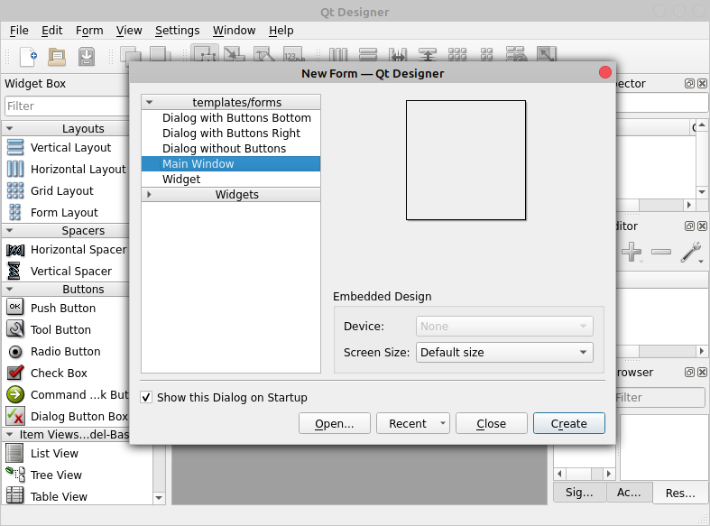

Accessibility / Embedded Systems / HCI
BVI Indoor Navigation Belt
A wearable haptic obstacle-detection belt for blind and visually impaired people. The prototype uses three Time-of-Flight sensors, Arduino processing, MOSFET motor switching, and six vibration motors to translate obstacle location into waist feedback.
Open Case Study